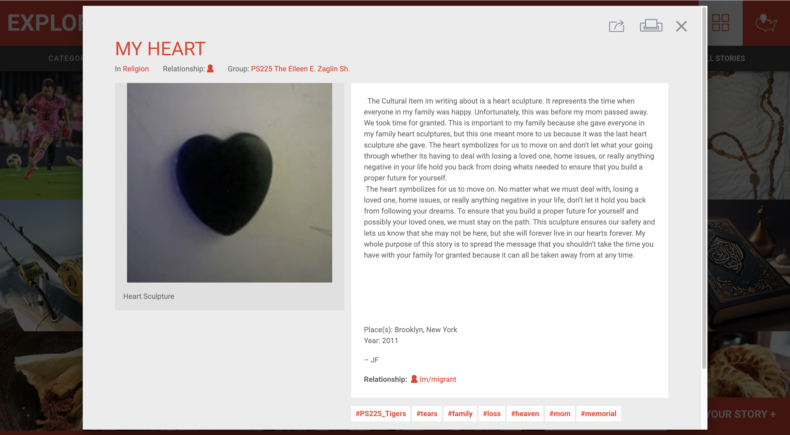
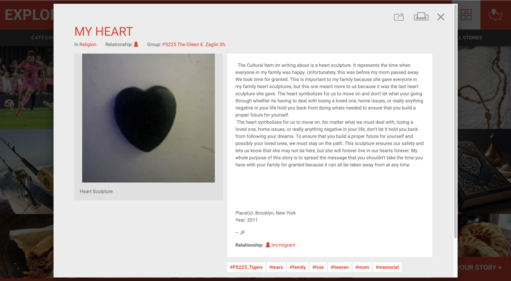
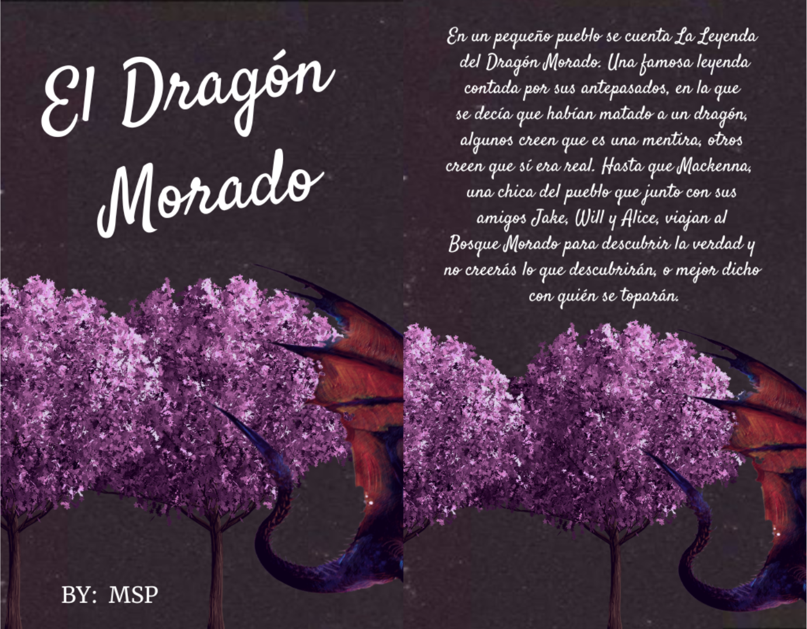

Week 4 Blog Post
For my project, Modern Romance Writing: Literary Inspiration and Personal Creativity, I’m approaching the subject through the lens of reader-to-writer influence, specifically, how modern romance novels can inspire and shape personal creative writing. While many archives focus on historical or canonical literature, I wanted to highlight contemporary romance works, especially young adult and new adult fiction, which are often overlooked in academic spaces despite their cultural and emotional impact on readers. During our lightning presentations, I got feedback from my teammates about how refreshing it was to “bring romance back into the light” as an underappreciated genre with so much to offer, and I completely agree. At the start, I’ll admit I was hesitant about romance. I used to see it as a “cringe” genre I couldn’t really connect with. But the more I began to write, the more I realized romance is actually one of the hardest genres to pull off. Expressing human feelings on paper is not easy, especially with the complex, layered emotions romance deals with. My intellectual process began by reflecting on the books that have most influenced my own writing style, themes, and character development. I realized that much of my creative work draws on the emotional beats, pacing, and intimacy I’ve absorbed from these stories. In thinking about how to archieve this, I’ve been inspired by class projects like Your Story, Our Story from the Tenement Museum, which focuses on personal narratives tied to meaningful objects. While my “objects” are books instead of physical artifacts, the idea of centering self-authored stories from lived experience is similar. I also connected with Chicana Por Mi Raza, which preserves stories often excluded from mainstream archives, a reminder that certain genres (like romance) and the voices behind them can also be overlooked, even when they hold cultural and emotional value. Through this project, I hope public audiences come away with an appreciation for how romance literature, even modern YA titles, can be artistically and emotionally influential. For scholarly audiences, I want to show the value of archiving creative responses to literature as a legitimate way of documenting reading experiences and personal growth alongside traditional literary analysis. Looking ahead, I’d love to see this project expand beyond my own work, maybe into a collaborative archive where other writers share pieces inspired by their favorite romance books. It would broaden the representation of the genre, capture diverse voices and interpretations, and continue to challenge the idea that romance is somehow “lesser” than other forms of literature. Your Story, Our Story – Tenement Museum: https://yourstory.tenement.org/ Chicana Por Mi Raza Digital Memory Collective: https://chicanapormiraza.org/
Week 3 Blog Post
An archive that I think works well is Your Story, Our Story by the Tenement Museum. It shares personal stories from regular people, many of whom are immigrants, with a focus on cultural identity.
Each story is centered around a meaningful object or memory from their lives. These stories aren’t from famous figures, but from everyday people reflecting on what matters to them and what those objects represent. These objects and memories serve as meaningful ways of knowing, showing how identity, culture, and personal history are passed down outside of traditional records.
It also reminds me of projects like Chicana Por Mi Raza that we discussed in class, which center stories often missing from traditional archives. The archive’s simplicity and clear structure are especially effective, and it resonates with my own project’s goal of preserving personal voice and self-authored creative work.
 
In contrast, I don’t think Humans of New York aligns well with my project. While I really like the platform and its mission, the people featured aren’t the ones writing their stories. Brandon Stanton interviews and photographs them, then writes the captions himself. Though this is still a powerful form of storytelling, it lacks the self-authorship I want to prioritize in my project. My focus is on people telling their own stories, in their own words, and exploring how that connects to identity and emotion. Additionally, I really liked the minimalistic but interactive layout of the website.
Your Story, Our Story – Tenement Museum: https://yourstory.tenement.org/
Humans of New York: https://www.humansofnewyork.com/humans-of-new-york
Chicana Por Mi Raza Digital Memory Collective: https://chicanapormiraza.org/

In contrast, I don’t think Humans of New York aligns well with my project. While I really like the platform and its mission, the people featured aren’t the ones writing their stories. Brandon Stanton interviews and photographs them, then writes the captions himself. Though this is still a powerful form of storytelling, it lacks the self-authorship I want to prioritize in my project. My focus is on people telling their own stories, in their own words, and exploring how that connects to identity and emotion. Additionally, I really liked the minimalistic but interactive layout of the website.
Your Story, Our Story – Tenement Museum: https://yourstory.tenement.org/
Humans of New York: https://www.humansofnewyork.com/humans-of-new-york
Chicana Por Mi Raza Digital Memory Collective: https://chicanapormiraza.org/
Week 2 Blog Post
The topic I’m grounding on for my project is my “personal writing archive,” specifically stories I wrote during my childhood up until now. Storytelling has been a big part of my identity and creative life. I want to document it and reflect on how my ideas and voice have evolved. I remember first starting writing during elementary school because of a writing contest my school was holding. I’m a very competitive person, so I wanted to win. I think it was something about dragons and fantasy and a group of friends trying to save their village from doom. I only got third place, but the process of writing gave me so much ecstasy, I thought, “Why not keep going?” I began writing more fantasy stories, and I even remember writing a fantasy series that I thought was going to be a bestselling trilogy (spoiler: it was never finished). I was around eleven years old, but a little girl can always dream. Even though most of these stories were written just for fun, they each kind of show what I cared about or how I saw the world at the time. I went from fantasy to mystery (who murdered the cheerleader in town or something like that). It was with that genre that I entered next year’s contest again, and this time I got first place. Ever since then, I haven’t stopped. I’ve explored different genres like romance, fiction, and historical. Even though most of them are just fun projects I haven’t really thought much of (most of them unfinished too), they’re pretty fun and help keep me grounded during hard times. Note: I recently found the cover of the first book I wrote for my school's writing competition! (Translation: "The Purple Dragon" Back Cover: "In a small town, the legend of the Purple Dragon is told. A famous legend told by their ancestors, in which they said they had killed a dragon. Some believe it's a lie, others believe it was real. Until Mackenna, a girl from the town, along with her friends Jake, Will, and Alice, travel to the Purple Forest to discover the truth. You won't believe what they discover, or rather, who they run into.")  For this project, I’m thinking of including a mix of typed-up versions and maybe pictures of my brainstorming notes or outlines from my story process (just like the above). That feels like a more personal, creative way of “archiving” than just uploading PDFs. In terms of “ways of knowing,” I think memory and emotion play a huge part in how I’ll build this archive. A traditional archive might just focus on the final drafts, but mine is more about process: the cringey story drafts, the forgotten plot holes, the inspiration behind certain characters. I want to treat those imperfect pieces as important parts of the story, too. It’s not just about what I wrote, but also why I wrote it. I guess this challenges traditional ways of archiving because I’m not presenting polished, professional work. I’m archiving unfinished thoughts, childhood dreams, and a creative journey that’s still ongoing. It’s kind of exciting to treat those as valuable and worth remembering.